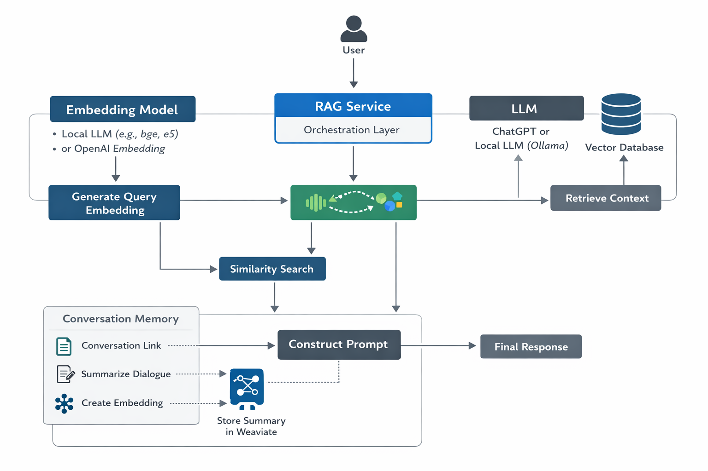

ContextRAG is a context extension platform that enhances interactions with Large Language Models by retrieving project-specific knowledge before sending prompts to the model.
It allows developers to interact with AI systems that understand their documentation, architecture, codebase, and past conversations.
ContextRAG uses Retrieval Augmented Generation (RAG) to combine vector search, conversation memory, and developer knowledge ingestion.
